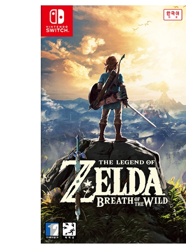

이제까지 나온 젤다 시리즈 중 가장 활동 무대가 광활하며 플레이의 자유도가 높다. 스카이워드 소드, 이상한 모자의 디렉터였던 후지바야시 히데마로가 디렉터를 맡고 아오누마 에이지는 총괄 프로듀서를 담당했다고 한다. 역대 젤다 시리즈의 개발 경험을 토대로 만든 게임인 한편, 게임의 개발 취지, 세계관 등에서는 1986년에 나온 초대 젤다의 전설과 관련이 매우 깊다. 이 게임 특유의 자유로운 세계는 초대 젤다에서 추구했던 모험의 정신을 본보기 삼아 이루어진 것이다.
